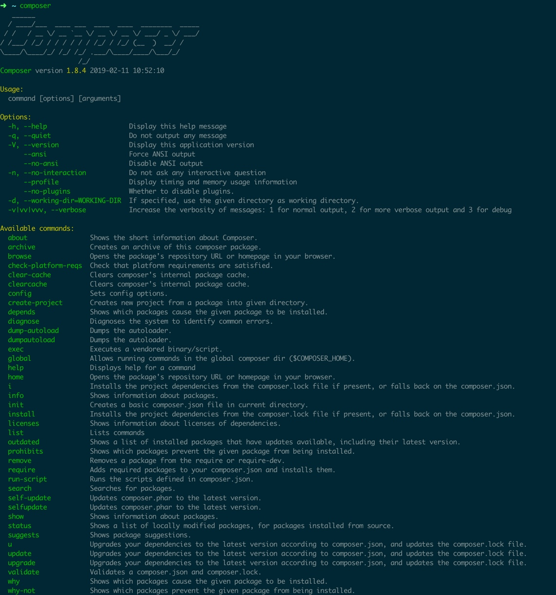

<!doctype html>
<html class="no-js" lang="en">
  <head>
    <meta charset="utf-8" />
    <meta name="viewport" content="width=device-width, initial-scale=1.0" />
    <title>Composer 依頼管理工具介紹 - 記筆記，學所學</title>
    
    
    <link href="atom.xml" rel="alternate" title="記筆記，學所學" type="application/atom+xml">
    <link rel="stylesheet" href="asset/css/foundation.min.css" />
    <link rel="stylesheet" href="asset/css/docs.css" />
    <script src="asset/js/vendor/modernizr.js"></script>
    <script src="asset/js/vendor/jquery.js"></script>
    <script src="asset/highlightjs/highlight.pack.js"></script>
    <link href="asset/highlightjs/styles/github.css" media="screen, projection" rel="stylesheet" type="text/css">
    <script>hljs.initHighlightingOnLoad();</script>
    <script>
      function before_search(){
        var searchVal = 'site:xnote.dev ' + document.getElementById('search_input').value;
        document.getElementById('search_q').value = searchVal;
        return true;
      }
    </script>
  </head>
  <body class="antialiased hide-extras">
    <div class="marketing off-canvas-wrap" data-offcanvas>
      <div class="inner-wrap">
        <nav class="top-bar docs-bar hide-for-small" data-topbar>
          <section class="top-bar-section">
            <div class="row">
              <div style="position: relative;width:100%;">
                <div style="position: absolute; width:100%;">
                  <ul id="main-menu" class="left">

                    <li id=""><a target="self" href="index.html">Home</a></li>

                    <li id=""><a target="_self" href="archives.html">Archives</a></li>

                  </ul>
                  <ul class="right" id="search-wrap">
                    <li>
                      <form target="_blank" onsubmit="return before_search();" action="https://google.com/search" method="get">
                          <input type="hidden" id="search_q" name="q" value="" />
                          <input tabindex="1" type="search" id="search_input"  placeholder="Search"/>
                      </form>
                    </li>
                  </ul>
                </div>
              </div>
            </div>
          </section>
        </nav>
        <nav class="tab-bar show-for-small">
          <a href="javascript:void(0)" class="left-off-canvas-toggle menu-icon">
          <span> &nbsp; 記筆記，學所學</span>
          </a>
        </nav>
        <aside class="left-off-canvas-menu">
          <ul class="off-canvas-list">

            <li><a target="self" href="index.html">Home</a></li>

            <li><a target="_self" href="archives.html">Archives</a></li>

            <li><label>Categories</label></li>

            <li><a href="website.html">website</a></li>

            <li><a href="terminal.html">terminal</a></li>

            <li><a href="laravel.html">laravel</a></li>

            <li><a href="php.html">php</a></li>

          </ul>
        </aside>
        <a class="exit-off-canvas" href="#"></a>
        <section id="main-content" role="main" class="scroll-container">


 <script type="text/javascript">
  $(function(){
    $('#menu_item_index').addClass('is_active');
  });
</script>
<div class="row">
  <div class="large-8 medium-8 columns">
    <div class="markdown-body article-wrap">
      <div class="article">

        <h1>Composer 依頼管理工具介紹</h1>
        <div class="read-more clearfix">
          <span class="date">2019/4/5</span>

          <span>posted in&nbsp;</span>


          <span class="posted-in"><a href='composer.html'>composer</a></span>

          <span class="comments">

          <a href="https://xnote.dev/composer-introduction.html#disqus_thread">comments</a>

          </span>
        </div>
      </div>
      <div class="article-content">
        <p><a href="https://getcomposer.org/">Composer</a> 是 <code>PHP</code> 的依頼套件管理工具，以自動化簡化原本需大量人工處理的工作。</p>

<span id="more"></span><!-- more -->

<h2 id="toc_0">安裝</h2>

<p>依據文件操作即可</p>

<ul>
<li><a href="https://getcomposer.org/download/">https://getcomposer.org/download/</a></li>
<li><a href="https://getcomposer.org/doc/00-intro.md">https://getcomposer.org/doc/00-intro.md</a></li>
</ul>

<p>若有使用 <code>Homebrew</code> 也可以使用指令一行安裝</p>

<pre><code class="language-shell">brew install composer
</code></pre>

<h3 id="toc_1">進行驗證</h3>

<p>輸入以下指令，能看到下方畫面代表安裝成功</p>

<pre><code class="language-shell">composer
</code></pre>

<p></p>

<h2 id="toc_2">更新</h2>

<p>需要更新時，只需要打指令即可</p>

<pre><code class="language-shell">composer self-update
</code></pre>

<p>若使用 <code>Homebrew</code> 則輸入</p>

<pre><code class="language-shell">brew upgrade composer
</code></pre>

<h2 id="toc_3">Packagist</h2>

<p><a href="https://packagist.org/">Packagist</a> 是 <code>PHP</code> 套件倉庫中心，也是 <code>Composer</code> 主要的套件資料來源。</p>

<p>當要尋找套件時可以先來這邊搜尋，避免重複造輪子，也可以將自己的套件發佈到此網站提供別人使用。</p>

<p>也可以透過指令搜尋套件</p>

<pre><code class="language-shell">composer search laravel
</code></pre>

<h2 id="toc_4">組成介紹</h2>

<p>在一個 <code>Composer</code> 專案下，是由下列三個東西所組成的。</p>

<h3 id="toc_5">composer.json</h3>

<p>是一個 <code>json</code> 格式的<strong>檔案</strong>，功能是 <code>Composer</code> 的設定檔，主要提供開發人員所察看維護。</p>

<p>內容包含<br/>
 - 專案說明<br/>
 - 依頼套件及版本號<br/>
 - 其它設置<br/>
 - 自訂 script 及 event hook</p>

<blockquote>
<p>此檔案會進版本控制。</p>
</blockquote>

<h3 id="toc_6">composer.lock</h3>

<p>看內容也會發現是 <code>json</code> 格式的<strong>檔案</strong>，此檔案是提供<strong>軟體程式</strong>使用的，會自動維護禁止人為修改。</p>

<p>用途是確切記錄安裝時詳細的版本號，可以確保多人協作或線上環境都使用同一份套件及程式碼。</p>

<blockquote>
<p>此檔案會進版本控制。</p>
</blockquote>

<h3 id="toc_7">verdor/</h3>

<p>此<strong>資料夾</strong>用於存放下載依頼套件及 <code>autoload</code> 相關檔案</p>

<blockquote>
<p>此資料夾<strong>不用</strong>進版本控制。</p>
</blockquote>

<h2 id="toc_8">常用指令介紹</h2>

<p>介紹實務上可能會用到的一些指令，為避免介紹失焦，各指令不會提及太深用法，會另開筆記專門講解。</p>

<p>想瞭解更多可以前往 <a href="https://getcomposer.org/doc/">Composer Document</a> 查看文件。</p>

<p>或是輸入指令</p>

<pre><code class="language-shell">composer help {command}
</code></pre>

<h3 id="toc_9">init [options]</h3>

<p>交互式協助建立 <code>composer.json</code> 檔案。</p>

<p>當然選擇手動建立 <code>composer.json</code> 也是可以的。</p>

<h3 id="toc_10">require [options] [--] [&lt;packages&gt;]...</h3>

<p>用於安裝依頼套件，同時也會把依頼寫入 <code>composer.json</code> 檔案。</p>

<p>標準使用方式</p>

<pre><code class="language-shell">composer require monolog/monolog
</code></pre>

<blockquote>
<p>套件名稱後面可帶上版本號，若空會安裝最新版。</p>
</blockquote>

<p>標示為開發環境依頼套件 <code>--dev</code>。</p>

<pre><code class="language-shell">composer require --dev fzaninotto/faker
</code></pre>

<h3 id="toc_11">install [options] [--] [&lt;packages&gt;]...</h3>

<p>依據 <code>composer.lock</code> 安裝對應版本套件，通常用於第一次建立本地環境或線上環境。</p>

<blockquote>
<p>若本地無 <code>composer.lock</code> 檔，會同時建立一份。</p>
</blockquote>

<p>標準使用方式</p>

<pre><code class="language-shell">composer install
</code></pre>

<p>有時候會在 <code>composer.json</code> 標示環境要求，但是執行 <code>composer</code> 是透過 <code>docker</code> 安裝，只是要下載套件不滿足環境要求也無妨，這時就會使用</p>

<pre><code class="language-shell">composer install --ignore-platform-reqs
</code></pre>

<p>來略過環境檢查。</p>

<p>在正式環境中，不需要安裝 <code>require-dev</code> 的套件時，可加上 <code>--no-dev</code> 來加速安裝時間及減少空間使用</p>

<pre><code class="language-shell">composer install --no-dev
</code></pre>

<h3 id="toc_12">update [options] [--] [&lt;packages&gt;]...</h3>

<p>依據 <code>composer.json</code> 版本號條件，更新條件下最新版套件，會同時更新 <code>composer.lock</code> 檔案。</p>

<pre><code class="language-shell">composer update
</code></pre>

<h3 id="toc_13">dump-autoload [options]</h3>

<p>重新產生 <code>autoload</code> 檔案，由於 <code>Composer</code> 會快取依頼的檔案，當修改路徑或載入，最好執行一遍重新建立快取檔。</p>

<h3 id="toc_14">global &lt;command-name&gt; [&lt;args&gt;]...</h3>

<p>全域專案，通常用於安裝 <code>PHP</code> 所寫的指令</p>

<p>預設放在 <code>~/.composer/</code> 底下</p>

<pre><code class="language-shell">composer global require laravel/installer
</code></pre>

<h2 id="toc_15">結論</h2>

<ul>
<li><code>Composer</code> 對於 <code>PHP</code> 專案規模化提升提供了很大的幫助。</li>
<li><code>Composer</code> 是現在 <code>PHP</code> 依頼管理工具的主流。</li>
<li>大多場景下不用很深的理解就用得很好，在一開始可以不用投入太多學習資源在這邊，遇到一些特殊需求，再深入研究即可。</li>
</ul>

      </div>
      <div class="row">
        <div class="large-6 columns">
          <p class="text-left" style="padding:15px 0px;">

            <a href="laravel-composer-json.html" title="Previous Post: 解析 Laravel 的 composer.json 配置">&laquo; 解析 Laravel 的 composer.json 配置</a>

          </p>
        </div>
        <div class="large-6 columns">
          <p class="text-right" style="padding:15px 0px;">

            <a  href="php-trending.html" title="Next Post: 瞭解 PHP 現行趨勢">瞭解 PHP 現行趨勢 &raquo;</a>

          </p>
        </div>
      </div>
      <div class="comments-wrap">
        <div class="share-comments">
          

          <div id="disqus_thread"></div>

        </div>
      </div>
    </div>
  </div>
<!-- in sidebar -->
 <div class="large-4 medium-4 columns">
  <div class="hide-for-small">
    <div id="sidebar" class="sidebar">
      <div id="site-info" class="site-info">

        <h1>記筆記，學所學</h1>
        <div class="site-des">記錄所學之物，重學理解之事</div>
        <div class="social">

          <a target="_blank" class="github" target="_blank" href="https://github.com/xiang-note" title="GitHub">GitHub</a>


          <a target="_blank" class="rss" href="atom.xml" title="RSS">RSS</a>
        </div>
      </div>

      <div id="site-categories" class="side-item ">
        <div class="side-header">
          <h2>Categories</h2>
        </div>
        <div class="side-content">
          <p class="cat-list">

            <a href="website.html"><strong>website</strong></a>

            <a href="terminal.html"><strong>terminal</strong></a>

            <a href="laravel.html"><strong>laravel</strong></a>

            <a href="php.html"><strong>php</strong></a>

          </p>
        </div>
      </div>
      <div id="site-categories" class="side-item">
        <div class="side-header">
          <h2>Recent Posts</h2>
        </div>
        <div class="side-content">
          <ul class="posts-list">


            <li class="post">
              <a href="laravel-composer-json.html">解析 Laravel 的 composer.json 配置</a>
            </li>


            <li class="post">
              <a href="composer-introduction.html">Composer 依頼管理工具介紹</a>
            </li>


            <li class="post">
              <a href="php-trending.html">瞭解 PHP 現行趨勢</a>
            </li>


            <li class="post">
              <a href="laravel-index.html">Laravel 教學資源目錄</a>
            </li>


            <li class="post">
              <a href="jobs-control.html">工作管理（jobs control）背景執行使用方法</a>
            </li>


          </ul>
        </div>
      </div>
    </div>
  </div>
</div>
</div><!-- row -->
           <div class="page-bottom clearfix">
            <div class="row">
              <p class="copyright">Copyright &copy; 2019
              Powered by <a target="_blank" href="http://www.mweb.im">MWeb</a>,&nbsp;
              Theme used <a target="_blank" href="http://github.com">GitHub CSS</a>.</p>
            </div>
          </div>
        </section>
      </div>
    </div>


    <script>
      var disqus_shortname = 'xiang-note';
      (function() {
        var d = document;
        var s = d.createElement('script');
        s.src = 'https://' + disqus_shortname + '.disqus.com/embed.js';
        s.setAttribute('data-timestamp', +new Date());
        (d.head || d.body).appendChild(s);
      })();
    </script>
    <script id="dsq-count-scr" src="//xiang-note.disqus.com/count.js" async></script>


    <script src="asset/js/foundation.min.js"></script>
    <script>
      $(document).foundation();
      function fixSidebarHeight(){
        var w1 = $('.markdown-body').height();
        var w2 = $('#sidebar').height();
        if (w1 > w2) { $('#sidebar').height(w1); };
      }
      $(function(){
        fixSidebarHeight();
      })
      $(window).load(function(){
        fixSidebarHeight();
      });
    </script>


<!-- Global site tag (gtag.js) - Google Analytics -->
<script async src="https://www.googletagmanager.com/gtag/js?id=UA-137584046-1"></script>
<script>
  window.dataLayer = window.dataLayer || [];
  function gtag(){dataLayer.push(arguments);}
  gtag('js', new Date());

  gtag('config', 'UA-137584046-1');
</script>

  </body>
</html>
